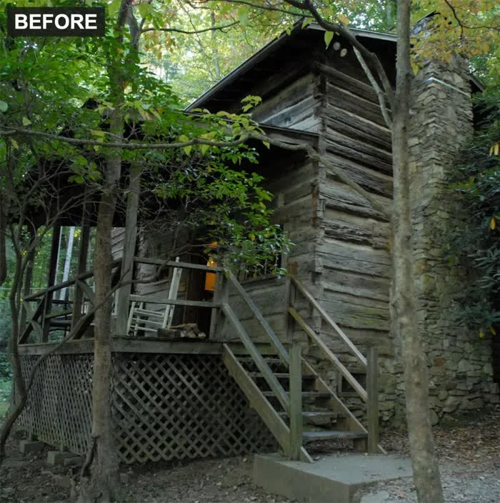
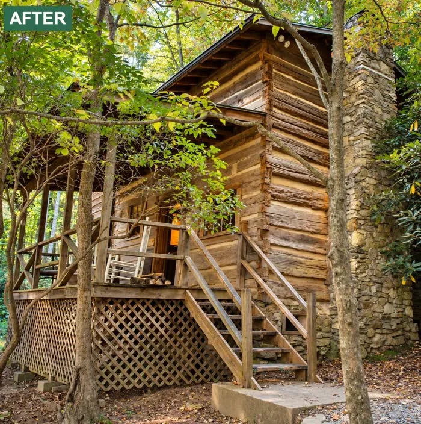
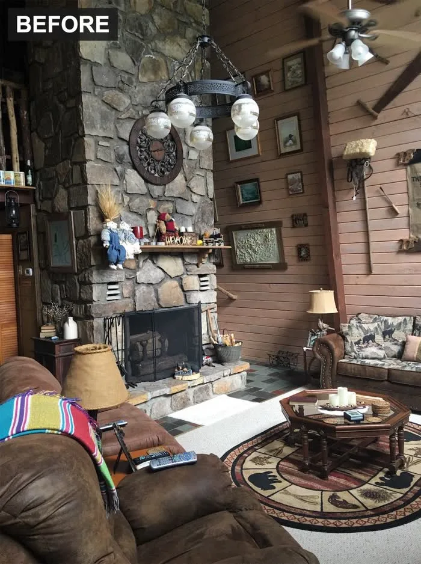
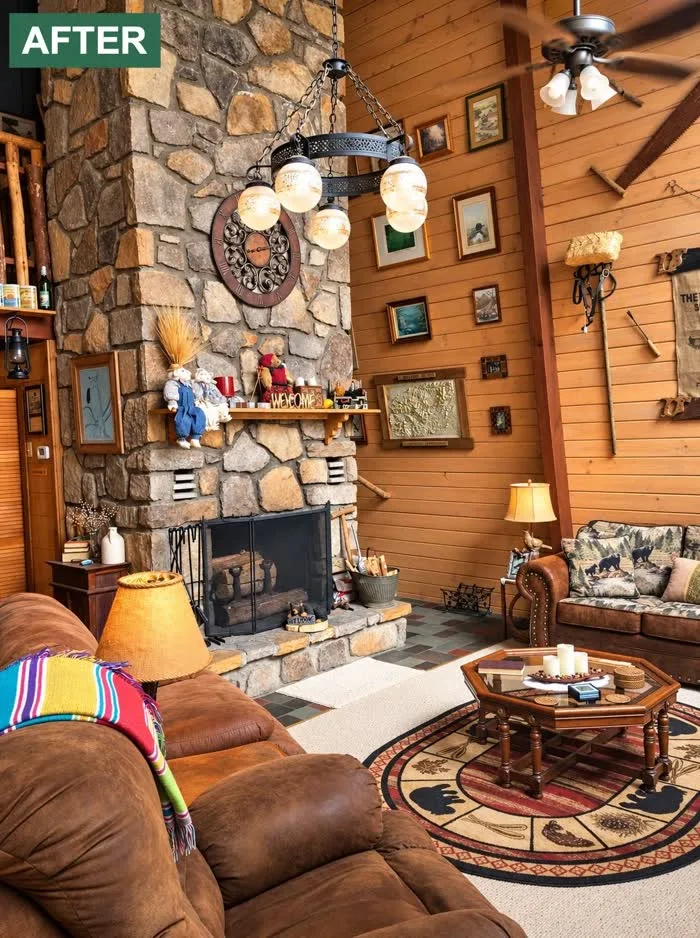
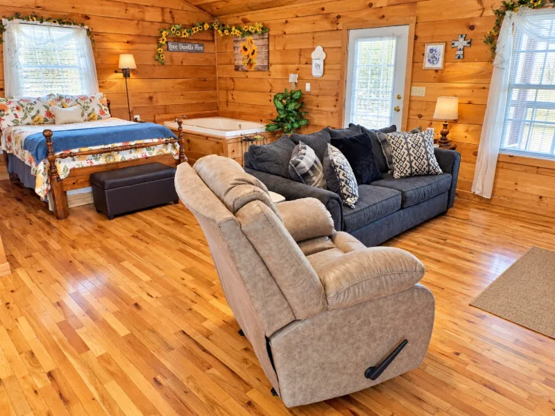
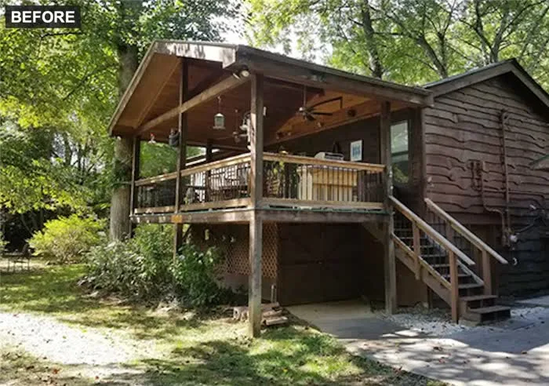
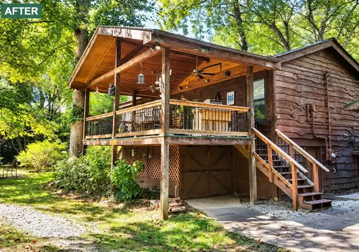

Our work
Property photographs before and after enhancement: balanced light, true color, straight lines. Shown with the owners' permission.
The trail
Scroll sideways along the trail. Drag across a photo to compare before and after.
- Cabin exteriorExterior


- Living roomInterior


- Bedroom and sitting areaInterior

- FireplaceInterior


- Covered deckExterior


Want to see your own place like this? Send a link to your listing and we will edit a photograph as a free sample.
Tell us about your photographs.
Send a link to your listing, or attach a few photographs. We reply by email.
Send us your listing